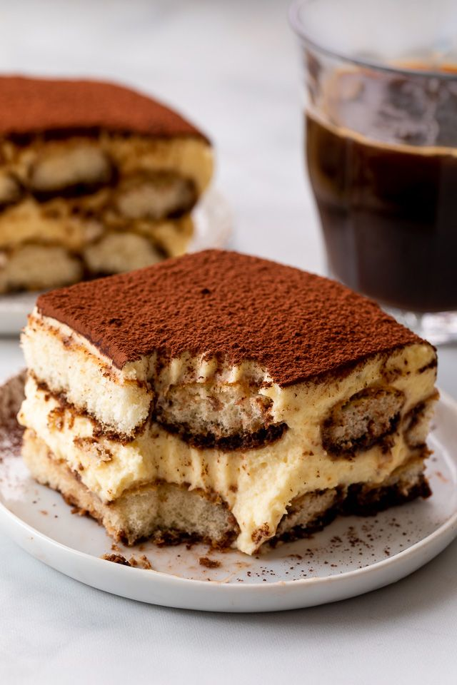

Tiramisù Recipe

Description:
Indulge in the divine flavors of Italy with our classic tiramisu recipe. This beloved dessert, meaning "pick me up" in Italian, combines delicate ladyfinger cookies soaked in espresso with a rich mascarpone cream. Join us on a culinary journey as we guide you through crafting this iconic treat, perfect for any occasion. Get ready to savor the irresistible taste of homemade tiramisu.
Ingredients:
- 6 large egg yolks
- 3/4 cup granulated sugar
- 1 cup mascarpone cheese, softened
- 1 1/2 cups heavy cream
- 2 cups brewed espresso or strong coffee, cooled to room temperature
- 1/4 cup coffee liqueur (optional)
- 2 tablespoons unsweetened cocoa powder
- 24-30 ladyfinger cookies (savoiardi)
Steps:
- In a heatproof bowl, whisk together the egg yolks and sugar until well combined.
- Place the bowl over a pot of simmering water (double boiler) and continue to whisk constantly until the mixture thickens and becomes pale yellow, about 5-7 minutes.
- Remove the bowl from the heat and let it cool slightly.
- Add the softened mascarpone cheese to the egg mixture and beat until smooth.
- In a separate bowl, whip the heavy cream until stiff peaks form.
- Gently fold the whipped cream into the mascarpone mixture until well combined. Set aside.
- In a shallow dish, combine the brewed espresso and coffee liqueur (if using).
- Quickly dip each ladyfinger into the espresso mixture, making sure not to soak them too long, as they can become soggy.
- Arrange a layer of dipped ladyfingers in the bottom of a 9x13 inch dish, breaking them if necessary to fit.
- Spread half of the mascarpone mixture over the layer of ladyfingers.
- Repeat with another layer of dipped ladyfingers and the remaining mascarpone mixture.
- Sift cocoa powder over the top of the tiramisu to evenly coat.
- Cover and refrigerate the tiramisu for at least 4 hours, or preferably overnight, to allow the flavors to meld and the dessert to set.
- Before serving, dust with additional cocoa powder if desired. Enjoy your homemade tiramisu!